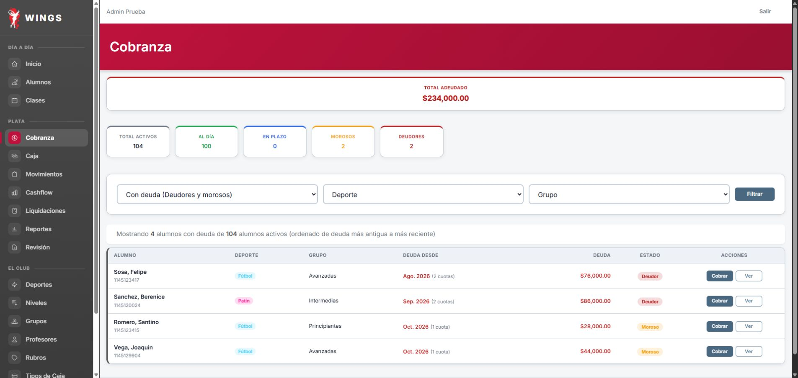
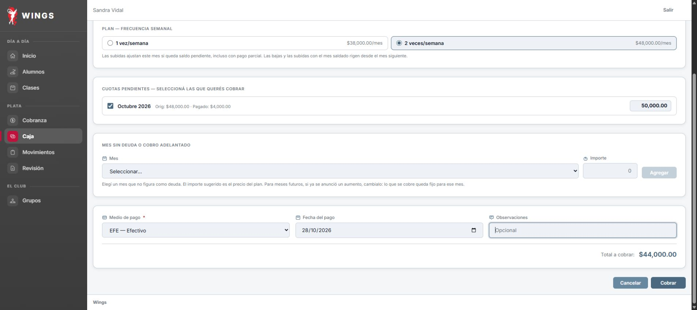
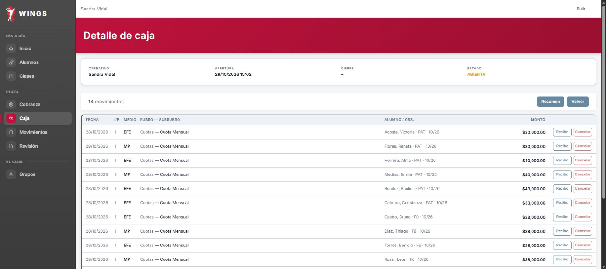
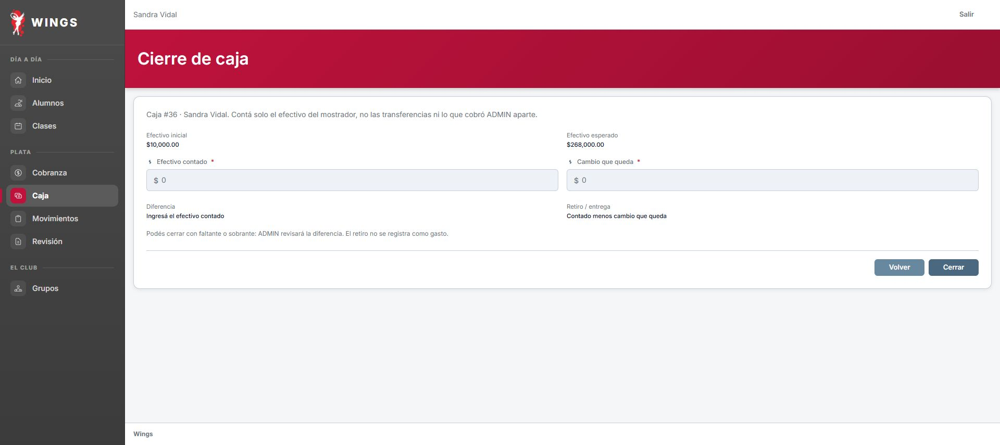
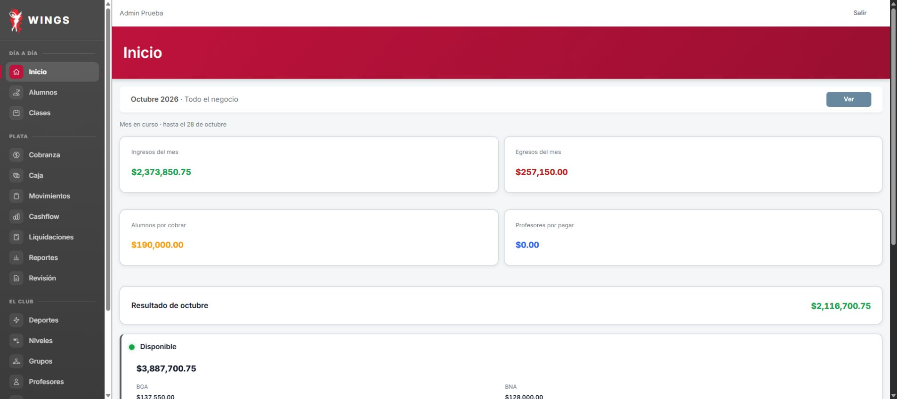
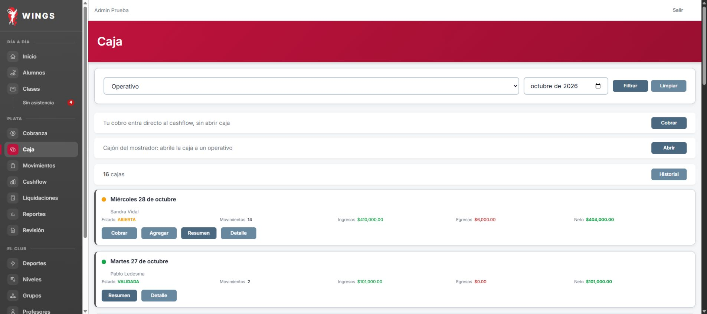
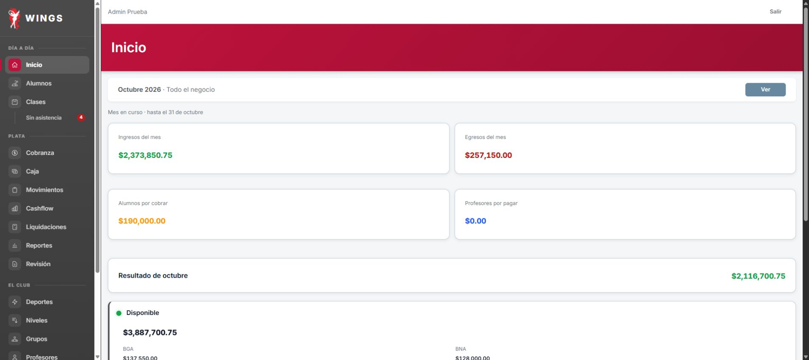

Codex CyE · 26/10/2026 · TEST / wingstest. Día19 parcial; días20–22 sin operar por fallo de simulación. No es aceptación integral ni cierre de T14.
Caja36 Sandra sigue ABIERTA: esperado $268.000 frente a $270.500 del guion; Librería $2.500 no se pudo eliminar tras dos fallos de confirmación de Chrome. No se cerró con un total distinto. Las tres simulaciones siguientes rechazaron el turno abierto.
Guion inicial:25 situaciones; ampliación durante ejecución:37. Resultado sobre la versión ampliada:3 Sí,2 Parcial,1 No probado por herramienta y31 No ejecutado. No se cuentan como pruebas los casos no operados.
| Caso | Resultado | Observado | Evidencia |
|---|---|---|---|
| 19.1 | Parcial | Se abrió caja #36 con $10.000. El intento de escribir 100000 mediante fill quedó en 10000.00 por interacción con el campo. No se obtuvo el aviso >50%, no se reabrió ni rectificó. Límite de ejecución, no rechazo de Wings demostrado. | TXT · JPG |
| 19.2 | Sí | Sin motivo: validación HTML «Completa este campo». Con el motivo del guion se condonaron $14.000. Cobranza pasó de $248.000 a $234.000; 100 Al día y 0 En plazo. No se generó un movimiento de plata visible por esta acción. | TXT · JPG |
| 19.3 | Parcial | Con el importe de fila $50.000, el resumen mostró $44.000. No se envió ese formulario ni se probó el diálogo Continuar/Cancelar. Se sustituyó por $44.000 y se cobró una vez en efectivo (CUOTA-133). Deuda total $190.000, 101 Al día: Joaquín dejó la lista de morosos. Diferencia frente al catálogo en la presentación del exceso; confirmación no probada. | TXT · JPG |
| 19.4a | No ejecutado | Agregado al guion durante la ejecución; no estaba en la versión congelada inicial. No se recorrió: agregado al guion después de comenzar. No se rehízo el día ni se repitió el reloj. | |
| 19.4 | Sí | Movimiento #171 de Limpieza corregido $3.800 → $3.500 como exige este caso. Pantalla «Movimiento actualizado». Los gastos de la caja bajaron $6.300 → $6.000 y el esperado $267.700 → $268.000 (el primer esperado es cuenta inferida de los renglones, no captura anterior). | TXT · JPG |
| 19.5 | No probado por la herramienta | Dos intentos desde pantallas nuevas. Confirmación nativa falló: primero Emulation.setFocusEmulationEnabled; segundo No dialog is showing. No se hizo un tercer intento ni se usó consola. Librería #172 continúa en la caja, $2.500; 14 movimientos. Historial de eliminación no probado. | TXT · JPG |
| 19.6 | Sí | Hernán guardó la #60 con 23 ausentes, botón exacto btn-guardar-asistencias una vez. Su listado cambió Pendiente → Sin presentes. El 31/10 la lista filtrada Sin asistencia no contiene esa clase. Observación adicional: el Inicio de Sandra la rotuló «Sin lista» aun después del guardado; no se corrigió. | TXT · JPG |
| 19.6b | No ejecutado | Agregado al guion durante la ejecución; no estaba en la versión congelada inicial. No se recorrió: agregado al guion después de comenzar. No se rehízo el día ni se repitió el reloj. | |
| 19.7a | No ejecutado | Agregado al guion durante la ejecución; no estaba en la versión congelada inicial. No se recorrió: agregado al guion después de comenzar. No se rehízo el día ni se repitió el reloj. | |
| 19.7 | No ejecutado | El formulario muestra esperado $268.000 frente a $270.500 del guion. No se ingresó ni confirmó el contado $271.000; no se cerró. La diferencia deriva de Librería pendiente de eliminar. Se aplicó la regla de no confirmar con total distinto. | TXT · JPG |
| 20.1 | No ejecutado | Día sin operar: la simulación de la mañana rechazó abrir por turno anterior abierto; no se ejecutaron pasos de pantalla ni rutinas reales. | TXT · TXT |
| 20.2 | No ejecutado | Día sin operar: la simulación de la mañana rechazó abrir por turno anterior abierto; no se ejecutaron pasos de pantalla ni rutinas reales. | TXT · TXT |
| 20.3 | No ejecutado | Día sin operar: la simulación de la mañana rechazó abrir por turno anterior abierto; no se ejecutaron pasos de pantalla ni rutinas reales. | TXT · TXT |
| 20.4 | No ejecutado | Día sin operar: la simulación de la mañana rechazó abrir por turno anterior abierto; no se ejecutaron pasos de pantalla ni rutinas reales. | TXT · TXT |
| 20.5 | No ejecutado | Día sin operar: la simulación de la mañana rechazó abrir por turno anterior abierto; no se ejecutaron pasos de pantalla ni rutinas reales. | TXT · TXT |
| 20.6 | No ejecutado | Día sin operar: la simulación de la mañana rechazó abrir por turno anterior abierto; no se ejecutaron pasos de pantalla ni rutinas reales. | TXT · TXT |
| 20.7 | No ejecutado | Agregado al guion durante la ejecución; no estaba en la versión congelada inicial. Día sin operar: la simulación de la mañana rechazó abrir por turno anterior abierto; no se ejecutaron pasos de pantalla ni rutinas reales. | TXT · TXT |
| 20.8 | No ejecutado | Agregado al guion durante la ejecución; no estaba en la versión congelada inicial. Día sin operar: la simulación de la mañana rechazó abrir por turno anterior abierto; no se ejecutaron pasos de pantalla ni rutinas reales. | TXT · TXT |
| 20.9 | No ejecutado | Agregado al guion durante la ejecución; no estaba en la versión congelada inicial. Día sin operar: la simulación de la mañana rechazó abrir por turno anterior abierto; no se ejecutaron pasos de pantalla ni rutinas reales. | TXT · TXT |
| 20.10 | No ejecutado | Agregado al guion durante la ejecución; no estaba en la versión congelada inicial. Día sin operar: la simulación de la mañana rechazó abrir por turno anterior abierto; no se ejecutaron pasos de pantalla ni rutinas reales. | TXT · TXT |
| 21.1 | No ejecutado | Día sin operar: la simulación de la mañana rechazó abrir por turno anterior abierto; no se ejecutaron pasos de pantalla ni rutinas reales. | TXT · TXT |
| 21.2 | No ejecutado | Día sin operar: la simulación de la mañana rechazó abrir por turno anterior abierto; no se ejecutaron pasos de pantalla ni rutinas reales. | TXT · TXT |
| 21.3 | No ejecutado | Día sin operar: la simulación de la mañana rechazó abrir por turno anterior abierto; no se ejecutaron pasos de pantalla ni rutinas reales. | TXT · TXT |
| 21.4 | No ejecutado | Día sin operar: la simulación de la mañana rechazó abrir por turno anterior abierto; no se ejecutaron pasos de pantalla ni rutinas reales. | TXT · TXT |
| 21.5 | No ejecutado | Día sin operar: la simulación de la mañana rechazó abrir por turno anterior abierto; no se ejecutaron pasos de pantalla ni rutinas reales. | TXT · TXT |
| 21.6 | No ejecutado | Agregado al guion durante la ejecución; no estaba en la versión congelada inicial. Día sin operar: la simulación de la mañana rechazó abrir por turno anterior abierto; no se ejecutaron pasos de pantalla ni rutinas reales. | TXT · TXT |
| 21.7 | No ejecutado | Agregado al guion durante la ejecución; no estaba en la versión congelada inicial. Día sin operar: la simulación de la mañana rechazó abrir por turno anterior abierto; no se ejecutaron pasos de pantalla ni rutinas reales. | TXT · TXT |
| 21.8 | No ejecutado | Agregado al guion durante la ejecución; no estaba en la versión congelada inicial. Día sin operar: la simulación de la mañana rechazó abrir por turno anterior abierto; no se ejecutaron pasos de pantalla ni rutinas reales. | TXT · TXT |
| 22.1 | No ejecutado | Día sin operar: la simulación de la mañana rechazó abrir por turno anterior abierto; no se ejecutaron pasos de pantalla ni rutinas reales. | TXT · TXT |
| 22.2 | No ejecutado | Día sin operar: la simulación de la mañana rechazó abrir por turno anterior abierto; no se ejecutaron pasos de pantalla ni rutinas reales. | TXT · TXT |
| 22.3 | No ejecutado | Día sin operar: la simulación de la mañana rechazó abrir por turno anterior abierto; no se ejecutaron pasos de pantalla ni rutinas reales. | TXT · TXT |
| 22.4 | No ejecutado | Día sin operar: la simulación de la mañana rechazó abrir por turno anterior abierto; no se ejecutaron pasos de pantalla ni rutinas reales. | TXT · TXT |
| 22.5 | No ejecutado | Día sin operar: la simulación de la mañana rechazó abrir por turno anterior abierto; no se ejecutaron pasos de pantalla ni rutinas reales. | TXT · TXT |
| 22.6 | No ejecutado | Día sin operar: la simulación de la mañana rechazó abrir por turno anterior abierto; no se ejecutaron pasos de pantalla ni rutinas reales. | TXT · TXT |
| 22.7 | No ejecutado | Agregado al guion durante la ejecución; no estaba en la versión congelada inicial. Día sin operar: la simulación de la mañana rechazó abrir por turno anterior abierto; no se ejecutaron pasos de pantalla ni rutinas reales. | TXT · TXT |
| 22.8 | No ejecutado | Agregado al guion durante la ejecución; no estaba en la versión congelada inicial. Día sin operar: la simulación de la mañana rechazó abrir por turno anterior abierto; no se ejecutaron pasos de pantalla ni rutinas reales. | TXT · TXT |
| 22.9 | No ejecutado | Agregado al guion durante la ejecución; no estaba en la versión congelada inicial. Día sin operar: la simulación de la mañana rechazó abrir por turno anterior abierto; no se ejecutaron pasos de pantalla ni rutinas reales. | TXT · TXT |
Imágenes tomadas de Chrome sobre Wings. No son maquetas ni capturas de una aplicación modificada.

Texto completo de pantalla
Texto completo de pantalla
Texto completo de pantalla
Texto completo de pantalla
Texto completo de pantalla
Texto completo de pantalla
Texto completo de pantallaÚltimo reloj:31/10/2026 15:00. Antes de reanudar se necesita una excepción expresa para repetir los controles y adaptar el cierre; no repetir cobros ya guardados. Revisión de negocio/técnica:Claude.